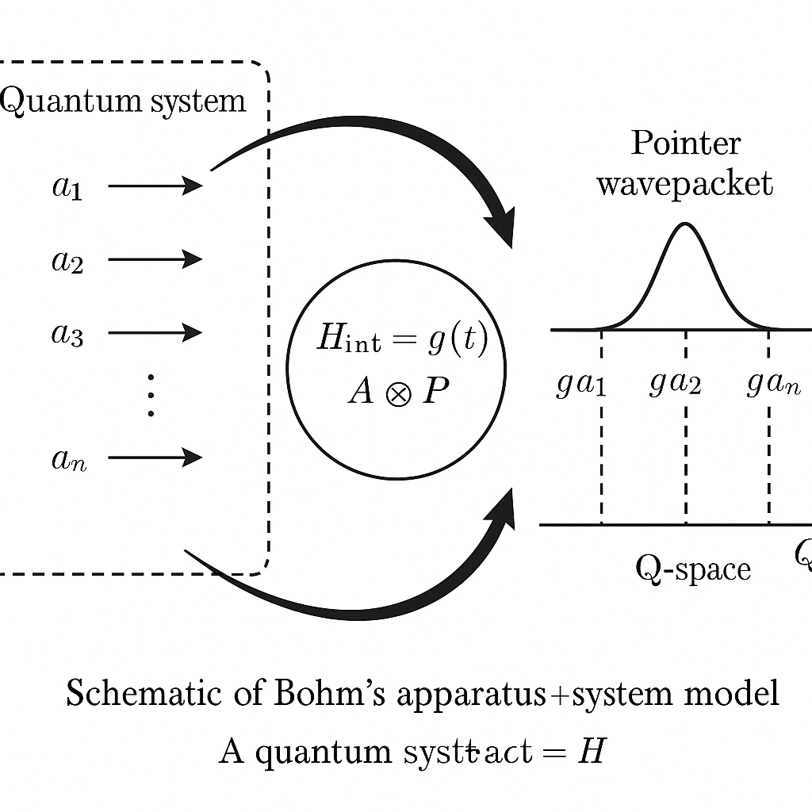
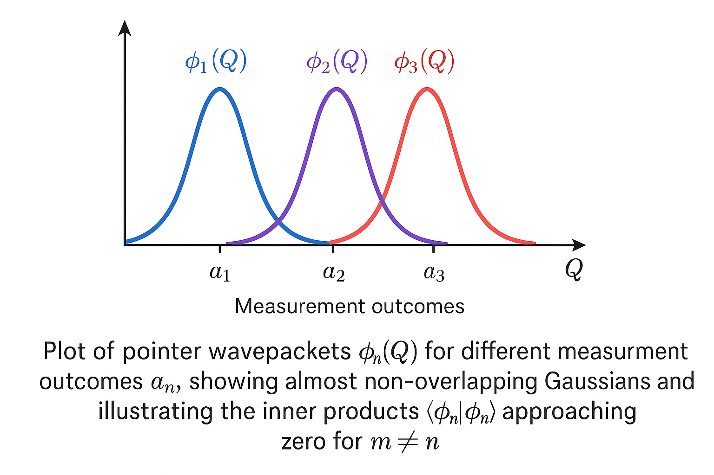
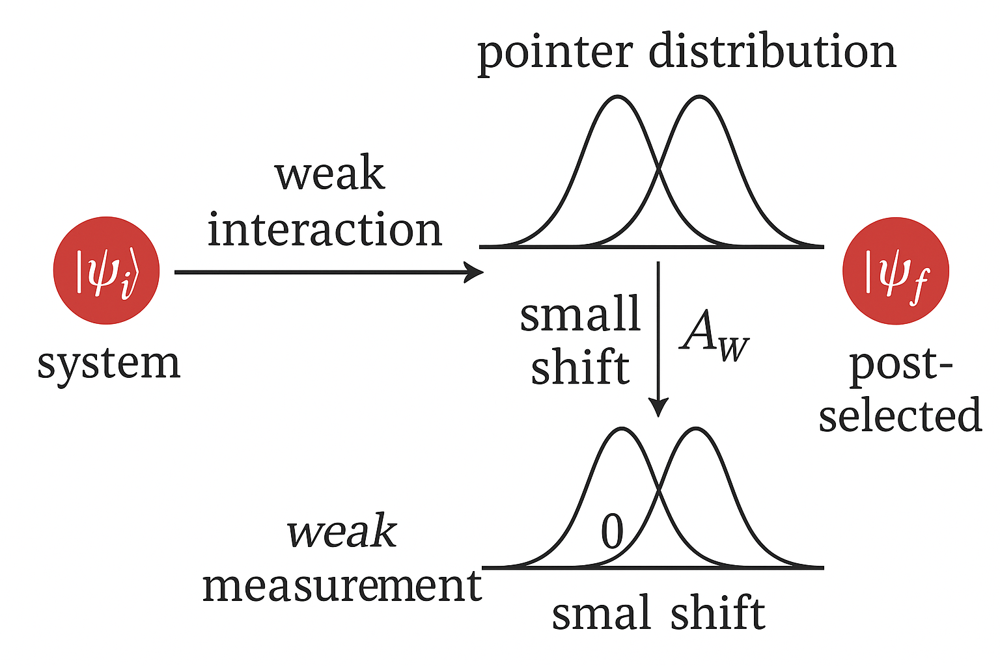
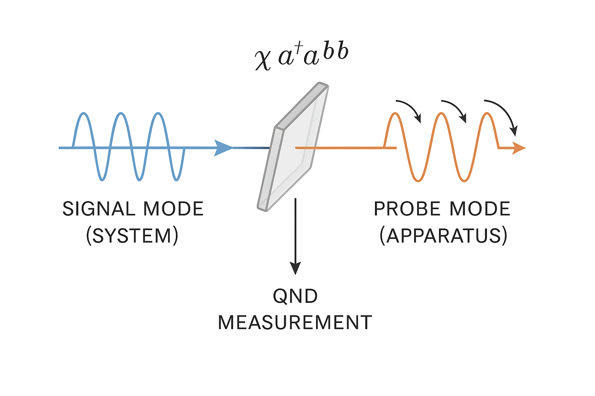
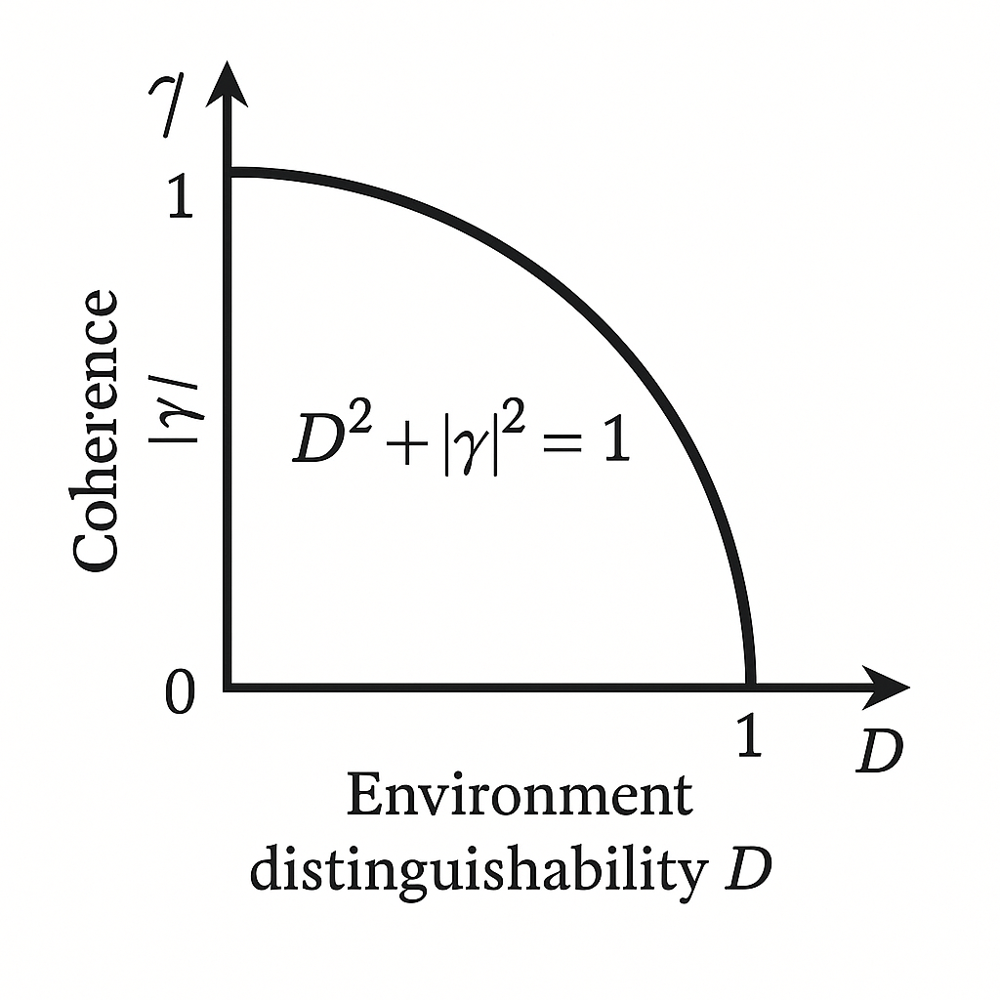
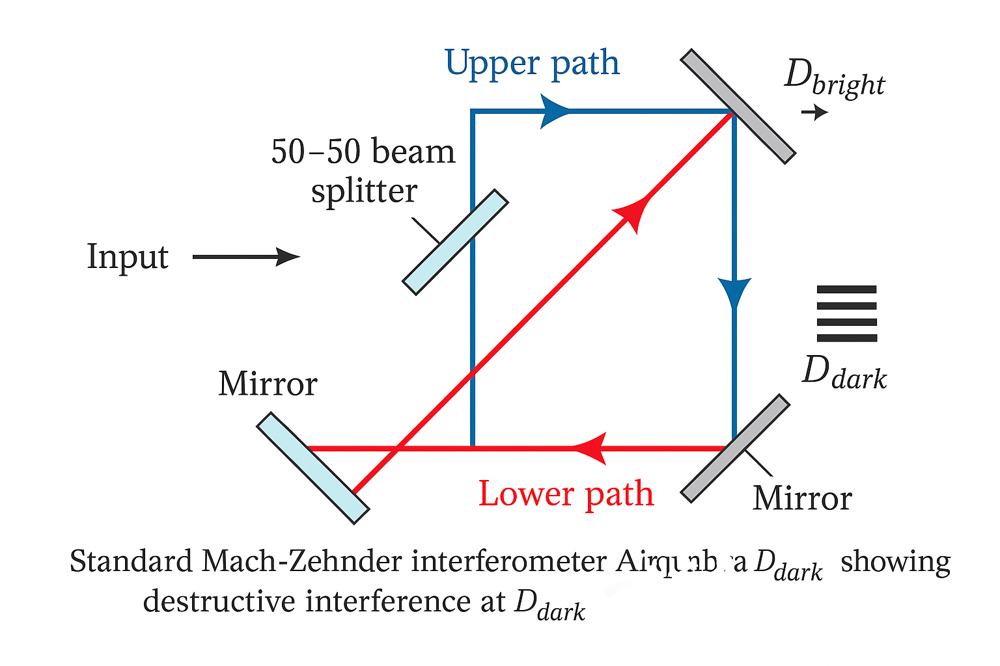
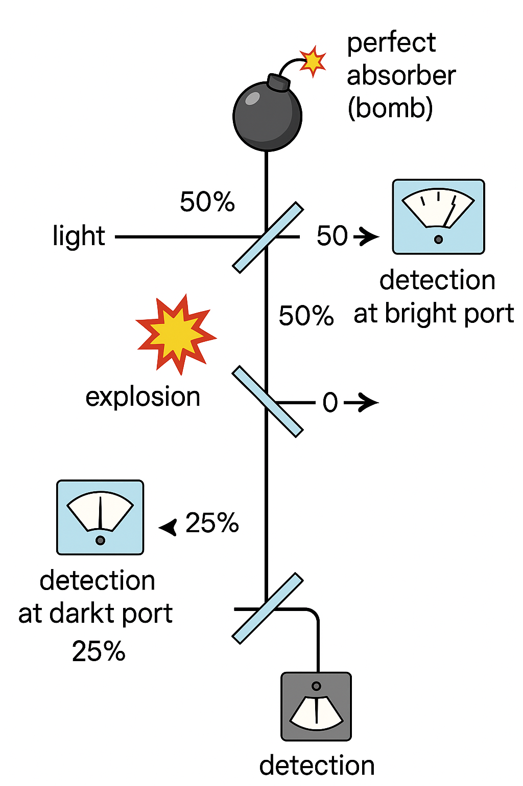
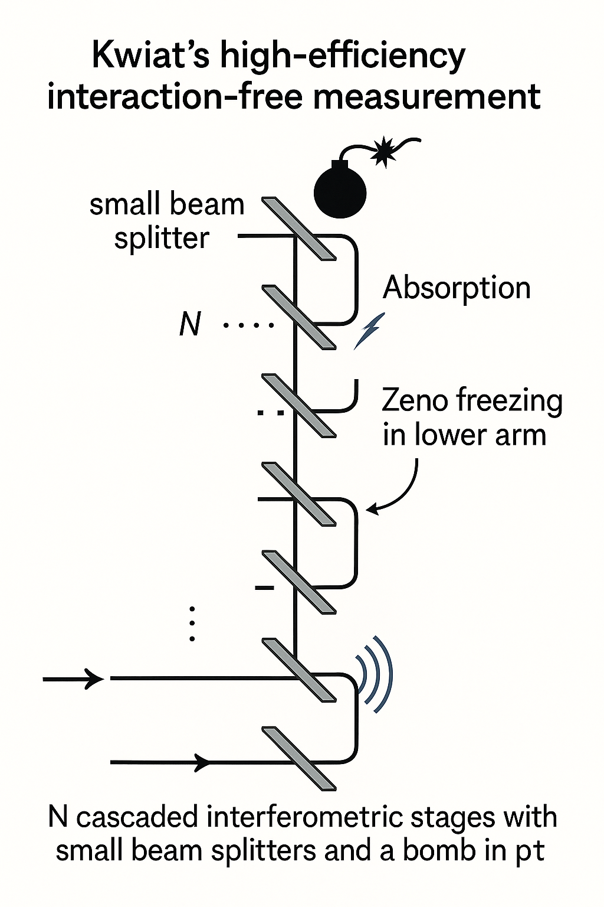
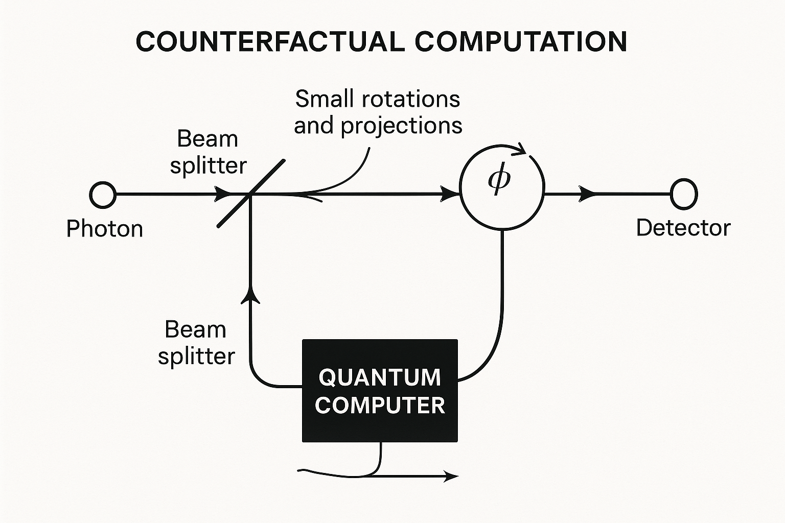
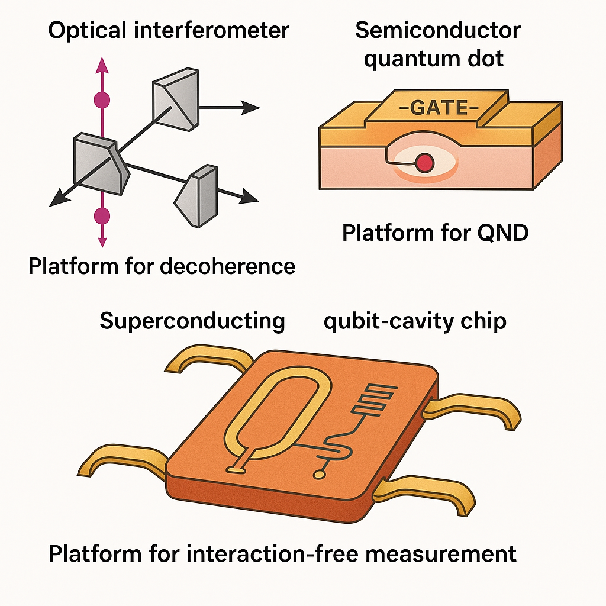

Generated by ChatGPT on 2025-12-16
逐字稿下載：ChatGPT_zh_L06_第_6_講_Decoherence主題_6.txt
完整音檔：
Segment 1:
Segment 2:
Segment 3:
Segment 4:
Segment 5:
Segment 6:
Segment 7:
Segment 8:
Segment 9:
Segment 10:
Segment 11:
Segment 12:
Segment 13:
Segment 14:
本講聚焦於退相干與測量理論的更深層結構，特別是：
Bohm（1951）提出的一個標準模型，是將「系統」與「測量裝置」視為一個整體封閉量子系統，並以一個測量哈密頓量 \[ H_{\text{int}} = g(t)\, A \otimes P \] 來建模，其中：
假設初態為 \[ |\Psi(0)\rangle = \left( \sum_n c_n |a_n\rangle \right) \otimes |\phi_0\rangle, \] 其中 \(|\phi_0\rangle\) 是 pointer 的初始波包，通常假設為在 \(Q\) 空間中局域於 0 的高斯波包： \[ \phi_0(Q) = \left(\frac{1}{2\pi \sigma_Q^2}\right)^{1/4} \exp\left( -\frac{Q^2}{4\sigma_Q^2} \right). \] 測量相互作用在測量時間內由單位ary 演化給出： \[ U = \exp\left( -\frac{i}{\hbar} A \otimes P \int_0^\tau g(t)\,dt \right) = \exp\left( -\frac{i g}{\hbar} A \otimes P \right). \]
由於 \(A\) 的本徵態滿足 \(A|a_n\rangle = a_n |a_n\rangle\)，我們有： \[ U\, |a_n\rangle \otimes |\phi_0\rangle = |a_n\rangle \otimes \exp\left( -\frac{i g a_n}{\hbar} P \right) |\phi_0\rangle. \] 而 \(\exp\left( -\frac{i g a_n}{\hbar} P \right)\) 作用在 \(Q\) 空間為一平移算符： \[ \left[ \exp\left( -\frac{i g a_n}{\hbar} P \right)\phi_0 \right](Q) = \phi_0(Q - g a_n). \] 因此測量互動造成之總態為 \[ |\Psi(\tau)\rangle = \sum_n c_n |a_n\rangle \otimes |\phi_n\rangle, \] 其中 \( |\phi_n\rangle \) 為在 pointer 位置空間中被平移的波包： \[ \phi_n(Q) = \phi_0(Q - g a_n). \]
關鍵觀念：這是「理想冪等投影測量」的微觀模型。若 \(g a_n\) 導致不同 \(|\phi_n\rangle\) 在 \(Q\) 空間中幾乎不重疊： \[ \langle \phi_m | \phi_n \rangle \approx 0 \quad (m\neq n), \] 則 pointer 可視為記錄了一個宏觀可分辨結果 \(a_n\)。但從 封閉整體 角度看，演化仍是單位ary 且無「塌縮」。 「塌縮」只是在我們將 apparatus 視為經典後，忽略或 trace out pointer 的量子自由度 時，退相干所呈現的有效描述。

interacting via H_int = g(t) A⊗P with a pointer wavepacket in Q-space that becomes shifted by amounts g a_n for each outcome.">總態 \(|\Psi(\tau)\rangle\) 對於系統的約化密度算符為： \[ \rho_S(\tau) = \mathrm{Tr}_A\big(|\Psi(\tau)\rangle\langle \Psi(\tau)|\big). \] 直接代入： \[ |\Psi(\tau)\rangle\langle \Psi(\tau)| = \sum_{m,n} c_m c_n^*\, |a_m\rangle\langle a_n| \otimes |\phi_m\rangle\langle \phi_n|. \] 對 apparatus 取偏跡： \[ \rho_S(\tau) = \sum_{m,n} c_m c_n^*\, \langle \phi_n | \phi_m \rangle \, |a_m\rangle\langle a_n|. \] 特別地，對角元素保持 \[ \langle a_n| \rho_S(\tau) |a_n\rangle = |c_n|^2, \] 而非對角元素（相干項）則乘上一個「重疊因子」： \[ \langle a_m| \rho_S(\tau) |a_n\rangle = c_m c_n^*\, \langle \phi_n | \phi_m \rangle,\quad (m\neq n). \] 若 pointer 波包幾乎不重疊，\(\langle \phi_n | \phi_m \rangle \approx 0\)，則系統的密度矩陣近似為： \[ \rho_S(\tau) \approx \sum_n |c_n|^2 |a_n\rangle\langle a_n|, \] 這正是「投影後的混合態」。在此無需假設非單位ary「塌縮」，退相干自然出現。
物理直覺：測量裝置（包含巨量自由度）在希爾伯特空間中為系統的不同本徵態「打上不同的 environment 標記」。 當這些標記（pointer 狀態）幾乎正交時，環境幾乎可以「完美區分」系統是哪個本徵態。 這正是「資訊外洩」的物理含義，而相干項即因此被抑制。

approaching zero for m≠n.">上述 apparatus+system 模型與「環境退相干（environment-induced decoherence）」形式上完全一致，只是環境被具體化為測量裝置。 一般而言，系統與環境的總態 \[ |\Psi\rangle = \sum_i c_i |s_i\rangle \otimes |E_i\rangle \] 若滿足 \[ \langle E_i | E_j \rangle \approx 0 \quad (i\neq j), \] 則系統約化態為 \[ \rho_S \approx \sum_i |c_i|^2 |s_i\rangle\langle s_i|. \] 測量裝置只是其中一種特殊環境，而「測量引起的退相干」只是「環境引起退相干」的極端情形（environment 非常高維且 pointer 態幾乎完全正交）。
在 Bohm 測量模型中，若耦合強度 \(g\) 非常小，使得 pointer 平移 \(g a_n\) 小於 pointer 初始波包寬度 \(\sigma_Q\)，則不同 \(\phi_n(Q)\) 仍高度重疊， \(\langle \phi_m|\phi_n\rangle \approx 1\)。此時稱為弱測量（weak measurement）。
形式化地，測量單位ary \[ U = e^{-\frac{i g}{\hbar} A \otimes P} \] 在 \(g\) 小時可展開為一階近似： \[ U \approx \mathbb{I} - \frac{i g}{\hbar} A \otimes P + O(g^2). \] 若初始系統態 \(|\psi_i\rangle\)，pointer 態 \(|\phi_0\rangle\)，則 \[ |\Psi(\tau)\rangle = U\,(|\psi_i\rangle\otimes|\phi_0\rangle) \approx |\psi_i\rangle\otimes|\phi_0\rangle -\frac{i g}{\hbar} (A|\psi_i\rangle)\otimes P|\phi_0\rangle. \]
若我們在測量後做後選擇（postselection），只保留系統最後被測到在某狀態 \(|\psi_f\rangle\) 的事件， 那 pointer 的條件態近似為： \[ \langle \psi_f|\Psi(\tau)\rangle \propto \langle\psi_f|\psi_i\rangle\,\left(1 - \frac{i g}{\hbar} A_w P \right)|\phi_0\rangle, \] 其中 \[ A_w = \frac{\langle \psi_f|A|\psi_i\rangle}{\langle \psi_f|\psi_i\rangle} \] 稱為weak value。pointer 的期望位置變化近似為 \[ \Delta \langle Q\rangle \approx g\, \mathrm{Re}\,A_w, \] 而 \(\Delta \langle P\rangle\) 與 \(\mathrm{Im}\,A_w\) 有關。
弱測量的關鍵特點：

, interacts weakly with a pointer (small shift), then is post-selected in |ψ_f>, with the pointer distribution showing a small shift corresponding to the weak value A_w.">在弱測量中，系統與 pointer 的糾纏非常弱，因此系統的約化密度算符只遭受微小退相干。我們可以在 \(g\) 的二階近似下定量估算。 總態約為 \[ |\Psi(\tau)\rangle \approx |\psi_i\rangle|\phi_0\rangle -\frac{i g}{\hbar} A|\psi_i\rangle P|\phi_0\rangle -\frac{g^2}{2\hbar^2} A^2|\psi_i\rangle P^2|\phi_0\rangle + O(g^3). \] 系統約化密度矩陣： \[ \rho_S(\tau) = \mathrm{Tr}_A\big(|\Psi(\tau)\rangle\langle\Psi(\tau)|\big). \] 透過高斯 pointer 性質及 \(\langle P\rangle_0 = 0\)、\(\langle P^2\rangle_0 = \sigma_P^2\) 等，可得（略去計算細節）： \[ \rho_S(\tau) \approx \rho_S(0) - \frac{g^2 \sigma_P^2}{\hbar^2}\left( A^2\rho_S(0) + \rho_S(0)A^2 - 2A\rho_S(0)A \right). \] 這其實對應 Lindblad 型主方程中的一個純退相干項： \[ \mathcal{L}[\rho] = -\gamma\,[A,[A,\rho]], \quad \gamma \sim \frac{g^2 \sigma_P^2}{\hbar^2\,\tau}. \] 因此弱測量可以視為多次小耦合的「連續監測」，在宏觀極限下導致一個連續的退相干動力學。
Quantum Non-Demolition 測量的目標是：對某一可觀察量 \(A\) 進行多次測量時，第一次測量不會「破壞」之後對同一 \(A\) 的測量結果，即
若 \[ H_{\text{int}} = g(t)\, A\otimes P, \] 則 \[ [H_{\text{int}},A] = 0 \] 自動滿足（因 \(A\) 只作用在系統子空間）。若再要求 \([H_S,A]=0\)，則 \(A\) 在自由演化中是保守量（常數）。這保證了：
退相干觀點：QND 測量雖然將系統與儀器糾纏，並使系統在 \(A\) 的本徵基底上退相干，但

在量子測量中，「獲得多少關於系統態的資訊」與「對系統造成多大擾動」之間存在基本權衡。 此 tradeoff 與不確定關係、no-cloning theorem、以及退相干機制密切相關。 核心直覺：
考慮一個二能階系統 \(|0\rangle,|1\rangle\)，初態 \[ |\psi_S\rangle = \alpha |0\rangle + \beta |1\rangle. \] 環境初態 \(E\) 零-->\(|E_0\rangle\)。互動後總態為 \[ |\Psi\rangle = \alpha |0\rangle\otimes |E_0'\rangle + \beta |1\rangle\otimes |E_1'\rangle, \] 其中 \(|E_0'\rangle,|E_1'\rangle\) 不必正交。約化態： \[ \rho_S = \mathrm{Tr}_E\,|\Psi\rangle\langle\Psi| = |\alpha|^2 |0\rangle\langle 0| + |\beta|^2 |1\rangle\langle 1| + \alpha\beta^* \langle E_1'|E_0'\rangle |0\rangle\langle 1| + \alpha^*\beta \langle E_0'|E_1'\rangle |1\rangle\langle 0|. \] 非對角項被乘上 \(\gamma = \langle E_1'|E_0'\rangle\)。\(|\gamma|\le 1\)，其大小反映了系統相干度的剩餘量。
另一方面，環境可對系統態資訊的獲取程度可由可辨識度或 trace distance 描述。環境中對應 \(|0\rangle\)、\(|1\rangle\) 的兩態 \(\rho_E^0 = |E_0'\rangle\langle E_0'|\)、\(\rho_E^1=|E_1'\rangle\langle E_1'|\)， 它們的 trace distance 為： \[ D(\rho_E^0,\rho_E^1) = \frac{1}{2}\|\rho_E^0-\rho_E^1\|_1 = \sqrt{1-|\langle E_0'|E_1'\rangle|^2} = \sqrt{1-|\gamma|^2}. \]
因此有簡潔關係： \[ D^2 + |\gamma|^2 = 1. \] 解讀：

更一般地，對任意量子測量可用 POVM（positive operator-valued measure）描述，元素 \(k\)，也就是一整族的 \(M k\) 的集合。-->\(\{M_k\}\) 滿足： \(k\) 做總和以後，等於單位算符。-->\[ M_k \ge 0,\quad \sum_k M_k = \mathbb{I}. \] 測量後狀態（條件在結果 \(k\)）為 \[ \rho \mapsto \rho_k = \frac{\sqrt{M_k}\,\rho\,\sqrt{M_k}}{\mathrm{Tr}(M_k\rho)}. \] 我們可定義：
Elitzur 與 Vaidman（1993）提出的炸彈測試是一個著名的「無互動測量」範例：在一定機率下，可以檢測到一個會被光子觸發的炸彈是「好炸彈」，同時不引爆它。 機制基於 Mach–Zehnder 干涉儀中的路徑退相干。
考慮 Mach–Zehnder 干涉儀：

形式化描述：
現在在上臂放入一顆可被單光子觸發的炸彈，假設「好炸彈」會確定吸收並引爆，不允許任何鬼鬼祟祟的 partial transmission。 若光子走上臂，則被吸收（炸彈爆炸）；若走下臂，則光子不受干擾並到達第二個 BS，但此時干涉條件被破壞，因此至少部分機率會在「暗端」被偵測到。 這就是「無互動測量」的關鍵：當你看到 \(D_d\) 計數時，你知道上臂中有「好炸彈」，但此過程中炸彈 沒有 被觸發——所以光子並未「真正與其互動」。
引入炸彈的兩種可能狀態：
壞炸彈情形：
干涉儀未被破壞，與前述空載情況完全一樣，因此：
\[
|\text{in}\rangle |D\rangle \mapsto |D_b\rangle |D\rangle.
\]
所有光子仍出現在亮端。
好炸彈情形：
在第一個 BS 之後：
\[
|\Psi_1\rangle = \frac{1}{\sqrt{2}}(|u\rangle + i|l\rangle)|G\rangle.
\]
若光子走上臂，上臂與好炸彈互動：
\[
|u\rangle|G\rangle \to |\text{absorb}\rangle,
\]
我們可抽象地將此吸收態表示為 \(|\text{EXP}\rangle\)（炸彈爆炸）。下臂不與炸彈互動：
\[
|l\rangle|G\rangle \to |l\rangle|G\rangle.
\]
因此
\[
|\Psi_2\rangle = \frac{1}{\sqrt{2}}(|\text{EXP}\rangle + i|l\rangle|G\rangle).
\]
若炸彈 沒有 爆炸，那麼實際上我們 condition 在未吸收的分支：
\[
|\Psi_2'\rangle = i|l\rangle|G\rangle.
\]
此時光子只剩下下臂成分，進入第二個 BS：
\[
|l\rangle \mapsto \frac{1}{\sqrt{2}}(i|D_b\rangle + |D_d\rangle).
\]
因此「在未爆炸條件下」輸出態
\[
|\Psi_{\text{out}}\rangle = i\frac{i}{\sqrt{2}}|D_b\rangle|G\rangle
+ i\frac{1}{\sqrt{2}}|D_d\rangle|G\rangle
= -\frac{1}{\sqrt{2}}|D_b\rangle|G\rangle
+ i\frac{1}{\sqrt{2}}|D_d\rangle|G\rangle.
\]
故在「未爆炸」事件中，光子有 1/2 機率在亮端被偵測，1/2 機率在暗端被偵測。
但「未爆炸」本身僅於整體事件中的機率為 1/2（因第一次分束後，光子有 1/2 機率入上臂導致炸彈爆炸）。 綜合起來：
退相干觀點：
好炸彈吸收的可能性等效於在上臂引入「which-path information」：即使在未爆炸分支中，環境已獲得足以破壞 \(|u\rangle\) 與 \(|l\rangle\) 相干的資訊（「如果光子走上臂就會炸」）。
數學上，可將炸彈視為環境自由度 \(E\)：
\[
|u\rangle|E_0\rangle \to |\text{absorb}\rangle,\quad
|l\rangle|E_0\rangle \to |l\rangle|E_0\rangle.
\]
這使得「存在好炸彈」與「不在上臂」兩種路徑的環境標記不同，從而干涉被破壞。
暗端計數即為具有退相干背景的測量結果。

雖然稱為「無互動測量」，但根據量子場論與開放系統視角，並非完全沒有互動：
從資訊–擾動 tradeoff 的角度看：
Kwiat 等人（1995–1999）提出利用量子 Zeno 效應增強 EV 無互動測量效率：在理想極限中，幾乎以接近 100% 機率檢測到好炸彈，而引爆機率趨近 0。
簡化模型：
若沒有炸彈，經過 \(N\) 次小旋轉： \[ U_\theta^N = U_{\pi/2}, \] 使初態 \(|l\rangle\) 逐步旋轉成 \(|u\rangle\)。最後光子一定出現在 \(|u\rangle\) 路徑端口。
若有好炸彈放在上臂，則每一次「小旋轉」之後，走到上臂分量的光子都會被吸收（炸彈爆炸），相當於在每次迭代後對「是否在上臂」做一次投影測量。若在每次都發現「沒在上臂」（即沒爆炸），則態被不斷「投影」回接近 \(|l\rangle\)，這正是量子 Zeno 效應。

初態 \(|\psi_0\rangle = |l\rangle\)。每次經過一個小 BS： \[ |\psi_{k+1}\rangle = U_\theta |\psi_k\rangle. \] 無炸彈情形下： \[ |\psi_N\rangle = U_\theta^N |l\rangle = U_{\pi/2} |l\rangle = |u\rangle. \]
有好炸彈情形：在每一步之後，若光子在上臂就被吸收。因此實際演化包含「旋轉 + 投影」。令投影算符 \[ P_l = |l\rangle\langle l|, \] 反映「沒被炸彈吸收」的條件。則一個「Zeno step」為 \[ |\psi_{k+1}\rangle = \frac{P_l U_\theta |\psi_k\rangle} {\|P_l U_\theta |\psi_k\rangle\|}, \] 並伴隨一個「生存機率」因子。計算： \[ U_\theta|l\rangle = \sin\theta |u\rangle + \cos\theta |l\rangle. \] 通過投影 \(P_l\)： \[ P_l U_\theta|l\rangle = \cos\theta |l\rangle. \] 因此在每一步，未被吸收的條件態只是被歸一化後回到 \(|l\rangle\)，整體生存機率為 \(|\cos\theta|^2\)。
經過 \(N\) 步之後，總「未爆炸」機率為 \[ P_{\text{no explosion}} = (\cos^2\theta)^N = \big(1-\sin^2\theta\big)^N \approx \left(1-\frac{\pi^2}{4N^2}\right)^N \to 1 \quad (N\to\infty), \] 其中使用 \(\theta = \pi/(2N)\)、\(\sin\theta\approx\theta\)。因此炸彈被引爆的總機率趨近 0。
同時，若炸彈存在，整個過程中條件態總是被投影回 \(|l\rangle\)；而若沒有炸彈，則態旋轉到 \(|u\rangle\)。因此最後只要在輸出端測量路徑，便可幾乎確定地分辨「有好炸彈」或「無炸彈」：
在 Kwiat 裝置中，「炸彈在上臂」提供了一個與 \(|u\rangle\) 路徑相連的吸收通道，相當於在該子空間不斷地「檢測」光子是否在上臂。 從開放系統角度：
反事實量子計算指的是：在某些情形下，可以從一個量子電腦（或量子黑箱）的輸出結果獲得資訊，儘管在我們所觀察的歷史分支中，該計算似乎「並沒有真的被執行」。 其核心工具是 interferometric 路徑與 EV/Kwiat 式無互動測量的結合。
概念類比：設想一個「計算盒子」只在特定路徑中被觸發，若被觸發會對干涉圖樣做出可偵測的改變；藉由精巧設計的干涉儀與 Zeno 程序，在某些事件中，即使粒子沒有經過計算盒路徑（沒有觸發計算），我們仍可從干涉結果（例如暗端計數或路徑分布）中推論計算結果。
假設有一量子黑箱實現一受控相位閘： \[ U_f|0\rangle = |0\rangle,\quad U_f|1\rangle = e^{i\phi}|1\rangle, \] 其中 \(\phi\) 依計算結果而定（例如 \(\phi=0\) 或 \(\pi\)）。我們希望在避免真正讓粒子通過「黑箱路徑」的情況下，推知 \(\phi\)。
考慮將路徑自由度作為控制系統，黑箱作用在內部 degree of freedom 上。根據 \(\phi\) 的不同，兩個路徑疊加在輸出端干涉方式不同。若干涉設計良好，某一輸出端（如暗端）計數事件只在某一特定 \(\phi\) 下才會出現。 而藉由 Zeno 式多次小耦合設計，可以讓實際粒子進入黑箱的機率非常小，卻仍然讓不同 \(\phi\) 的情況在輸出分布上有可觀察差異。

表面看來，我們彷彿「沒有執行計算」卻獲得結果；但從全量子態與多世界分支的觀點：
無互動測量與反事實計算理念已在多種平臺驗證與延伸：

在精密測量與量子感測中，目標常是：
在量子資訊理論中，對於「如何在給定擾動 budget 下最大化資訊獲得量」與「如何在給定資訊需求下最小化擾動」有系統地研究，例如：
反事實計算與無互動測量也帶來詮釋層面之爭論：
本講從 Bohm apparatus+system 模型出發，系統性討論了：